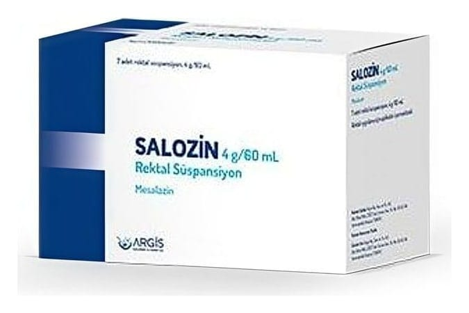

Salozin 4 g/60 ml Rektal Süspansiyon, 7 Adet

Ne için kullanılır
KT · Bölüm 1SALOZİN’in etkin maddesi mesalazin olup, her bir rektal süspansiyonda 4 g etkin madde bulunmaktadır.
SALOZİN “aminosalisilik asit ve benzeri ilaçlar” diye adlandırılan ve “intestinal antienflamatuvar” grubuna dahil bir ilaçtır. Bu ilaçlar kalın bağırsaktaki iltihabı önler.
SALOZİN karton kutu içinde 7 adet 60 mL'lik opak beyaz, kapağı yalıtılmış, polietilen şişe olarak piyasaya sunulmaktadır.
SALOZİN aşağıdaki durumlarda kullanılır: • Doktorlar tarafından ülseratif kolit olarak bilinen kalın bağırsağın (kolon) iltihaplanması ile oluşan hastalığın akut (ani başlangıçlı) ataklarının tedavisinde kullanılır.
Bu ilacı kullanmaya başlamadan önce bu KULLANMA TALİMATINI dikkatlice okuyunuz, çünkü sizin için önemli bilgiler içermektedir.
• Bu kullanma talimatını saklayınız. Daha sonra tekrar okumaya ihtiyaç duyabilirsiniz. • Eğer ilave sorularınız olursa, lütfen doktorunuza veya eczacınıza danışınız. • Bu ilaç kişisel olarak sizin için reçete edilmiştir, başkalarına vermeyiniz. • Bu ilacın kullanımı sırasında, doktora veya hastaneye gittiğinizde doktorunuza bu ilacı kullandığınızı söyleyiniz. • Bu talimatta yazılanlara aynen uyunuz. İlaç hakkında size önerilen dozun dışında yüksek veya düşük doz kullanmayınız.